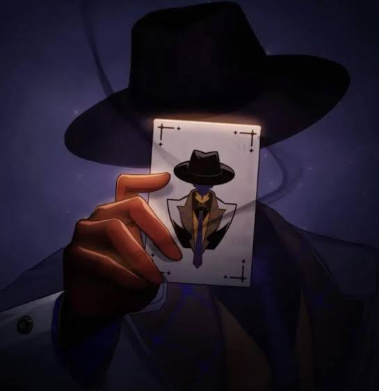

Fadhillah Ilham

Hobi
- Bermain game
- Ngoding
- Ngedit video
- Ngedit foto
Keahlian
- Bahasa Pemrograman:
- C++
- Java
- Aplikasi:
- Adobe Photoshop
- Adobe Premiere Pro
Aktivitas Terakhir
Bermain Deadlock

Bermain Deadlock